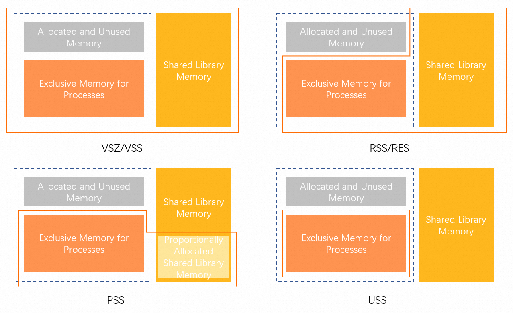
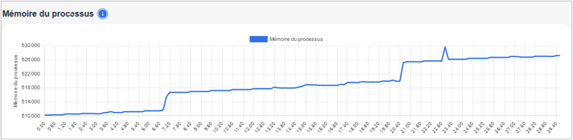

The Android development landscape is poised to undergo a major transformation. In a landmark announcement dated August 2026 titled “Elevating app quality: Reducing memory usage and improving device migration,” Google took another step forward in its pursuit of software quality. What were previously merely “best practice” recommendations will become strict compliance rules for the Play Store starting in February 2027. At the heart of this initiative: app memory usage.
For Android developers, lead developers, and architects, the message is crystal clear: efficiency is no longer an option—it’s a requirement for survival on the Play Store.
In this article, we analyze the technical implications of these new restrictions, break down the required metrics, and explore how the use of metrology tools enables us to address these changes with precision.
1. Google’s Crackdown: Why Has RAM Become a Key Factor?
Since Android’s inception, RAM management has always been the system’s Achilles’ heel. Unlike iOS, the Android ecosystem has to contend with extreme hardware fragmentation. While today’s flagship devices proudly boast 12 or 16 GB of RAM, a significant portion of the global market—and Play Store users—use devices with 3 or 4 GB, or even less for Android Go Edition devices.
The systemic impact of excessive memory usage
When an app uses an excessive amount of RAM, it doesn’t just slow down its own performance. It forces the system to trigger more frequent garbage collection (GC) cycles. Each GC cycle consumes CPU cycles, which can result in micro-stutters (jank) in the user interface.
Even more seriously, excessive memory pressure triggers Android’s Low Memory Killer (LMK). This system daemon begins by killing background processes to free up space. For the user, this means that other open apps restart from scratch, losing their state. In extreme cases, the foreground app is terminated, causing “Application Not Responding” (ANR) alerts or “Out of Memory” (OOM) crashes.
Google now explicitly links app quality to its ability to coexist smoothly with the system. As a result, the Play Store will incorporate these “Memory Health” metrics into its visibility algorithms. An app deemed too memory-intensive will automatically be given less prominence.
An Analysis of the New Technical Requirements
Google’s detailed requirements document highlights two key pillars: DEX code optimization and strict memory footprint management.
DEX Code Optimization and “Secure Onboarding”
The DEX (Dalvik Executable) format is the file format that contains your app’s compiled code. Google now requires developers to optimize the structure of these files to minimize memory usage right from launch.
The concept of “Secure Onboarding” aims to ensure that the app can launch and display its initial features without overwhelming the device’s RAM. This requires:
- Reducing the size of DEX files: The systematic use of tools such as R8 or ProGuard to remove dead code (tree shaking) and optimize bytecode is now a prerequisite.
- Code segmentation: Encourage the use of Android App Bundles and Dynamic Delivery to load into memory only what is strictly necessary at any given moment.
A Detailed Understanding of Metrics: PSS vs. RSS
Pour mesurer l’occupation mémoire, Google s’appuie sur des indicateurs précis qu’il est crucial de Essential Knowledge for Every Android Architect:
- PSS (Proportional Set Size): This is the metric that most accurately reflects reality. It represents the unique memory used by your process, plus a proportional share of the shared libraries. It is Google’s definitive measure for assessing an app’s actual impact on total RAM.
- RSS (Resident Set Size): This indicates the total memory occupying RAM, including all shared libraries. It is often misleading because it overestimates an app’s actual impact on the system.
Google now monitors PSS very closely, particularly during critical phases: cold starts, major screen transitions, and background task execution.

3. The Challenge of Measurement: Why Traditional Tools Are No Longer Sufficient
To comply with these rules, precise visibility is necessary. However, traditional testing methods have methodological biases that must be identified.
Emulators : convienient but limited
An emulator runs on an x86 architecture with virtualized resources. It does not replicate the fine-grained memory page management of a real Android kernel on an ARM architecture. Furthermore, an emulator is not subject to the thermal constraints that, on a real smartphone, can cause the system to modify the behavior of the Android Runtime (ART) to protect the components.
The “Dev Device” Bias
Testing your app exclusively on the latest-generation flagship devices is a common mistake. These devices “tolerate” memory leaks and massive object allocations thanks to their large memory capacity. Google’s new restrictions are specifically designed to protect users on lower-end devices. Ignoring this reality means risking a significant drop in performance in markets where hardware upgrades occur more slowly.
4. The Role of Metrology: The Greenspector Studio Approach
Given the complexity of these new requirements, profiling tools built into IDEs (such as Android Studio’s Memory Profiler) remain essential during the local debugging phase for analyzing the memory heap. However, to validate overall compliance and the application’s behavior under real production conditions, an external metrology approach – such as the one offered by Greenspector Studio – provides a complementary and objective perspective.
Monitoring Resource Usage on Physical Devices
One way to meet Google’s requirements is to test the app on a variety of physical devices. Using a real device cloud allows you to automate user flows on devices representative of the “Low-RAM” segment.
In this context, Greenspector Studio enables continuous monitoring of the RAM consumed by the app’s process as well as the total RAM consumed on the device. While Google uses PSS/RSS metrics for its internal audits, accurately tracking the memory allocated to the process on a real physical device is a key indicator. This allows you to visualize in real time how the app utilizes system resources and identify consumption spikes that could trigger Android’s Low Memory Killer, thereby ensuring greater stability on devices with limited resources.

Preserving Measurement Integrity (SDK-Free Approach)
A key technical consideration for any architect is the impact of the measurement tool on the system under test. Adding a monitoring SDK can introduce an “observer effect”: the SDK itself consumes memory and CPU cycles, thereby altering the behavior of the garbage collector.
The methodology adopted by Greenspector Studio relies on measurement external to the source code. By not integrating any third-party components into the APK or AAB, we ensure that the RAM consumed by the process corresponds exactly to that of the final application. This neutrality is key to guaranteeing that optimizations (such as those performed with R8/ProGuard) produce the intended effect without being interfered with by a tracking or RUM (real user monitoring) tool.
Automation and Safeguards in CI/CD
To prevent memory optimization from becoming a one-time, tedious task, integrating tests into the CI/CD pipeline is a promising approach for maintaining compliance over time.
By using Greenspector’s APIs, it is possible to define “memory budgets” based on the process’s memory consumption. If a new version of the application shows a deviation in RAM usage on a reference device, the technical team is alerted immediately. This approach transforms a regulatory requirement into a software quality metric monitored on a daily basis, ensuring that the application remains smooth and efficient, regardless of the end user’s device.
5. The Relationship Between Memory, CPU, and Power: A Holistic Approach
The memory optimization required by Google is not just a technical constraint; it is a direct way to improve the app’s overall efficiency.
The Energy Cost of RAM
It is a well-established technical fact that memory management comes at a significant energy cost. Keeping data in RAM requires constant refreshing of DRAM memory cells. But beyond this aspect, it is the strain placed on the system that consumes the most energy:
- Induced CPU activity: An app operating near memory saturation triggers constant activity by the Garbage Collector, which is a CPU-intensive task and therefore leads to additional battery consumption.
- Page management (ZRAM): Android often uses ZRAM to compress memory pages. These compression/decompression operations place a load on the processor and impact perceived smoothness.
An eco-score as a summary indicator
To help strike a balance between rich functionality and technical simplicity, Greenspector Studio offers an EcoScore. This metric aggregates data on performance, data usage, and battery consumption. For a lead developer, this is a valuable tool for providing an objective basis for technical decisions with product teams: a drop in the EcoScore may indicate that adding a feature threatens compliance with Play Store rules or significantly degrades the user experience on target devices.
Conclusion : Towards a Culture of Responsible Performance
This announcement from Google marks the end of the era of carelessness regarding hardware resources on Android. The operating system now demands strict discipline: every megabyte must be justified by its utility.
This constraint is actually an opportunity for the ecosystem. It drives the shift toward eco-friendly software design where performance, stability, and energy efficiency converge. By relying on rigorous measurement methods and tools like Greenspector Studio, development teams can approach these new rules not as a barrier, but as a framework for building more sustainable and universally high-performing applications.
Memory optimization thus becomes the foundation of a “Responsible Performance” strategy: a major competitive advantage in a market where perceived quality is the primary driver of user retention.
Image credits:
Stethoscope: Bermix Studio on Unsplash
Memory diagram: source unknown
Screenshot <GS> : Greenspector